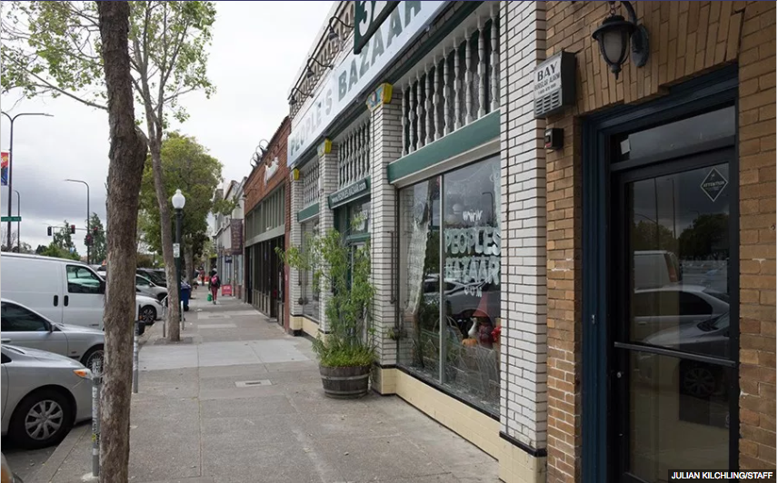
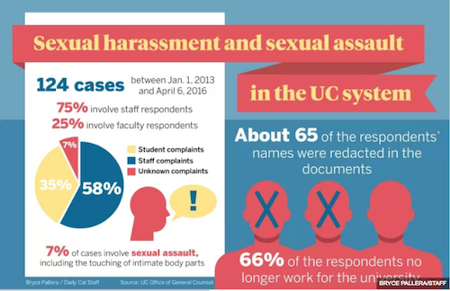
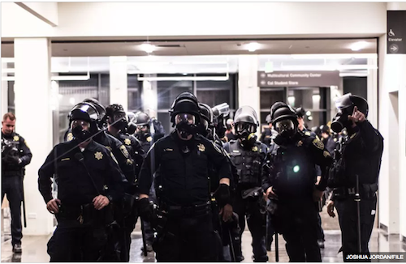

Echoes down the corridor: Gentrification poses threat to historical heritage of Berkeley neighborhood

‘Broken up’: UC Berkeley student Luis Mora shares his experience in Border Patrol custody
Homeless UC Berkeley students create support network in lieu of campus resources

Why are UC Berkeley students anxious?

Majority of 124 investigations occurred before latest UC sex misconduct policy update

Campus police face criticism to response to Milo Yiannopoulos